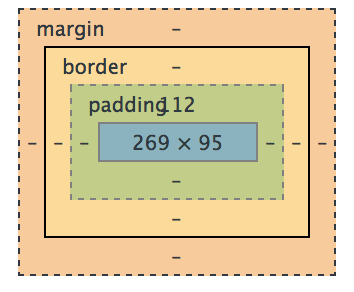

Today we are going to tell you about margins, borders, and padding and the differences between them.

For illustration purposes, we've included the image above that you can refer to.
Margins
The first thing you'll notice about the image above is the outer layer, which is appropiately labeled "margin."
Margins are defined as the area surrounding an element, outside of it's border. Margins separate an element from the surrounding elements by the margin's defined width.
There a few options you can use to properly set the size of a margin. Margins are measured in three different sets of units:
- pixels
- ems
- percentages
Each of these are used under different circumstances depending on the goals of the developer. Generally, pixels are used for elements that have fixed sizes while ems and percentages are used to ensure that elements maintain their sizes when screens are resized or when distributing to an audience that may have a variety of screen sizes.
Here is an example of how the CSS code looks when setting a margin's properties:
.class {
margin: 0, 10px, 0, 20px;
}
.class {
margin: 10px;
}
.class {
margin-left: 10px;
}
Borders
A border is the area between a margin and a padding. The image shown above may be slightly deceiving. The image makes it look like a border is approximately the same width as a margin or a padding; however, a border can be as thin as half of a pixel or even invisible, yet it still exists. Margins and paddings do not exist unless you create them. The reason developers set borders to be visible is generally for aesthetic/visual purposes only. There are more options available for borders than for margins/paddings such as style, color, width, texture.
Here is the CSS code for a border:
.class {
border-style: ridge;
border-width: 10px;
border-color: silver;
Padding
Lastly, the layer directly surrounding the element itself is called the padding. The padding in many ways can be thought of like the inverse of the margin. Rather than separating the element from other elements as the margin does, the padding separates the element from it's own border.
Paddings have the exact same units of measurement to choose from as margins - pixels, ems, or percentages and the syntax for setting the width using CSS is the same:
.class {
padding: 0, 10px, 0, 20;
}
.class {
padding: 10px;
}
.class {
padding-left: 10px;
}
Here is an image of the Google logo that you see on Google's homepage.
The section highlighted in green is the padding.
The section highlighted in blue is the element. I.e. The element is the image of the Google logo
which might be named something like "google_logo.jpg" in google's repository.